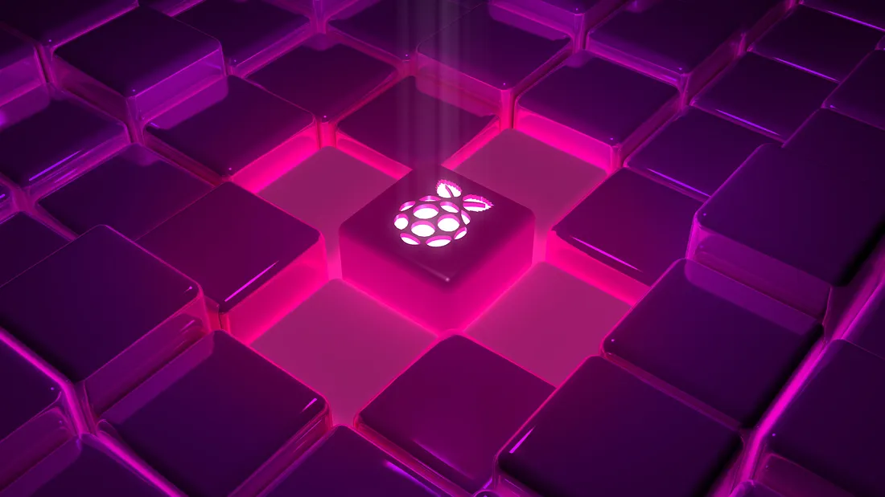
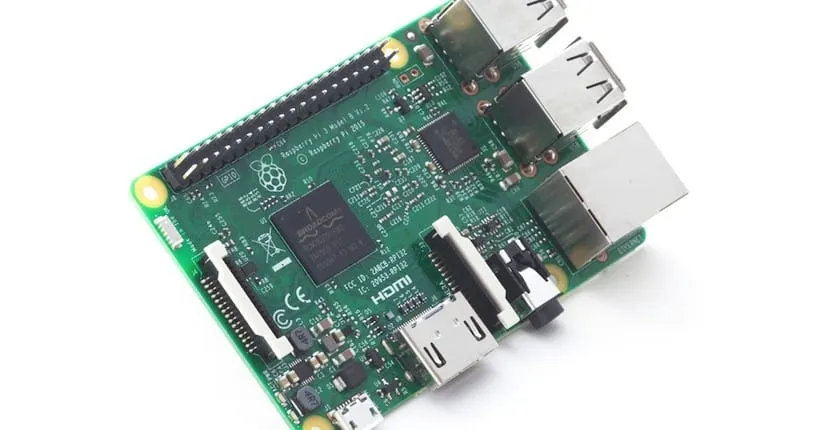

OCT 15, 2025 • 4 MIN READ
The Tiny Giant
How the Raspberry Pi Changed Computing
Welcome to the world of Single-Board Computers (SBCs), where a device that is the size of your palm packs the power of a desktop PC! At the heart of this revolution is the Raspberry Pi, a groundbreaking piece of hardware that has fundamentally altered how we learn, code, and innovate.

A Look Back: The History of the Pi
The history of the Raspberry Pi is rooted in academia and a concern for the future of computer science education. In the mid-2000s, educators at the University of Cambridge’s Computer Laboratory noticed a worrying decline in the technical skills of students applying for their computer science program. Students were adept at using smartphones and social media but lacked fundamental coding and hardware understanding. They needed an accessible, affordable, and engaging tool to improve basic computer science knowledge in schools.
The goal, led by figures like Eben Upton, was to create a device that students could afford to buy and, crucially, own and experiment without the fear of breaking an expensive family computer.
2012: The Launch of the Raspberry Pi 1 Model B. This was the official start. It featured a 700 MHz ARM11 processor and 256 MB (later 512 MB) of RAM, running on an SD card. It was rudimentary by today’s standards but was an instant hit, selling millions and quickly moving beyond its educational roots into the hands of hobbyists and developers worldwide.
The Foundation: The project is overseen by the Raspberry Pi Foundation, a UK-based charity focused on promoting the study of computer science. The Foundation’s non-profit structure ensures the core mission of accessibility and education remains the priority.
The Architecture: Technical Deep Dive
The Raspberry Pi is a marvel of miniaturization and integration. Its core components are integrated onto a single Printed Circuit Board (PCB), which is why it’s called a Single-Board Computer.
System-on-a-Chip (SoC): The Brain
The heart of the Pi is the Broadcom SoC, which stands for System-on-a-Chip. This single microchip combines the essential processing components:
- The CPU (Central Processing Unit) for general computing tasks. Modern Pis (like the Pi 4) feature powerful quad-core ARM Cortex processors, offering performance comparable to entry-level desktop machines.
- The GPU (Graphics Processing Unit) for handling graphics and video output. The integration of a powerful GPU allows the Pi to handle everything from 4K video decoding to demanding 3D graphics applications.
RAM and Storage
The system’s RAM (Random Access Memory) is typically located right next to the SoC for optimal speed. Instead of a traditional hard drive, the Pi uses a removable MicroSD card for persistent storage and booting the operating system, which is usually a flavor of Linux, such as Raspberry Pi OS (Debian-based).
The Power of Connectivity
A key feature that distinguishes the Pi is its rich set of connection ports:
- GPIO Pins: The General-Purpose Input/Output header is the Pi’s secret weapon for hardware hacking. This block of pins (often 40 pins) allows the Pi to interact directly with the physical world by connecting to sensors, LEDs, motors, and other electronic components. This is the interface for physical computing.
- USB and Ethernet: Standard ports allow for connecting peripherals and network access. Recent models even offer USB 3.0 for high-speed data transfer.
- HDMI/Micro-HDMI: Enables connection to monitors and TVs, with modern Pis capable of dual-monitor support.

Impact: Beyond the Classroom
What began as an educational tool quickly became the default platform for prototyping and innovation. Its low cost and low power consumption opened up new avenues for creators:
- IoT (Internet of Things): The Pi is the go-to device for developing smart home solutions, environmental monitors, and industrial controllers, often integrating with protocols like
MQTTorNode-RED. - Edge Computing: Its ability to process data locally makes it ideal for tasks that require immediate response, such as machine vision systems using libraries like
OpenCV. - Custom Servers: From Pi-hole (a network-level ad blocker) to home NAS (Network Attached Storage), the Pi is frequently repurposed as a tiny, dedicated server.
The Raspberry Pi is more than just a computer; it’s a globally adopted standard that provides an open, accessible gateway to understanding the hardware and software that define our digital world. It truly embodies the philosophy of “build, don’t just consume.”